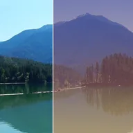

پوشش گرادیان

یک گرادیان دوцветی با شکل و حالت ترکیب دلخواه روی لایه میگذارد.
تنظیمات
| تنظیم | نوع | بازه | پیشفرض |
|---|---|---|---|
| رنگ ۱ | رنگ | – | #3A1C71 |
| رنگ ۲ | رنگ | – | #FFAF7B |
| شکل | انتخابی | خطی، شعاعی، بازتابی، زاویهای | خطی |
| زاویه | زاویه | -360° تا 360° | 90° |
| مقیاس | عدد | 0.05 تا 10 | 1 |
| شفافیت | عدد | 0 تا 1 | 0.6 |
| ترکیب | انتخابی | عادی، تیرهشدن، روشنشدن، همپوشانی، نور نرم، نور سخت، افزودن، تیرهتر، روشنتر، تفاوت، رنگ روشن، رنگ تیره | عادی |
| جابهجایی | نقطه (X, Y) | -4000 px تا 4000 px | 0 px, 0 px |